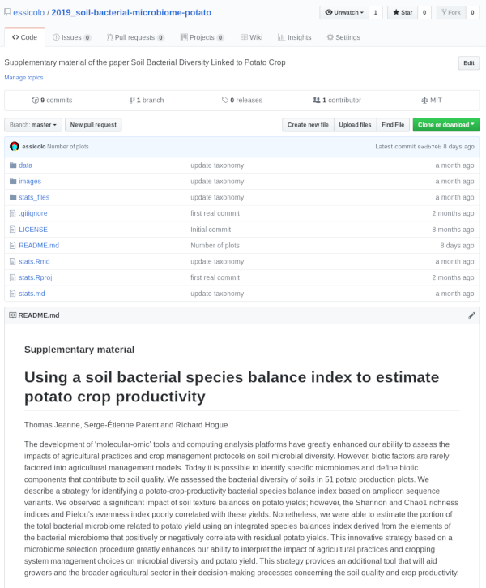
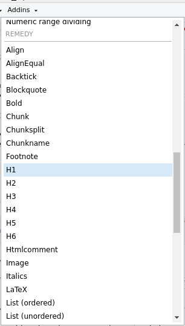
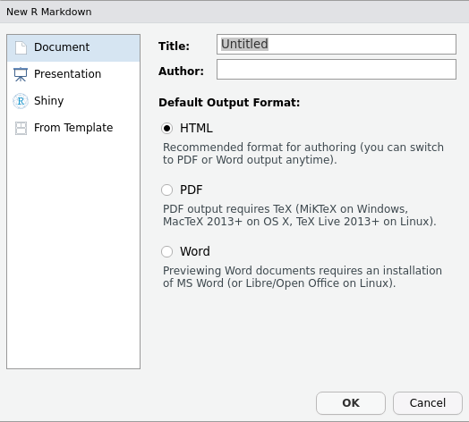
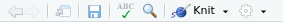
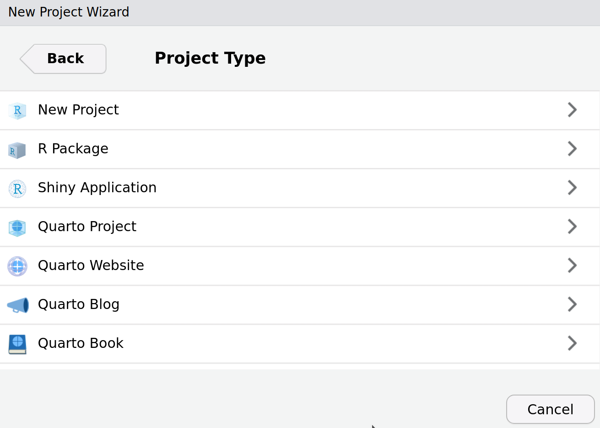
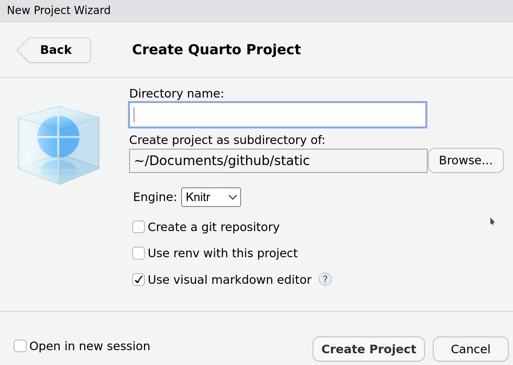
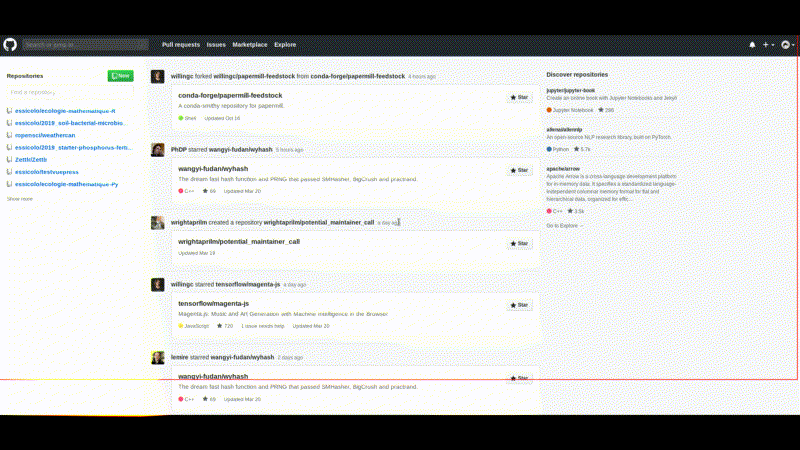
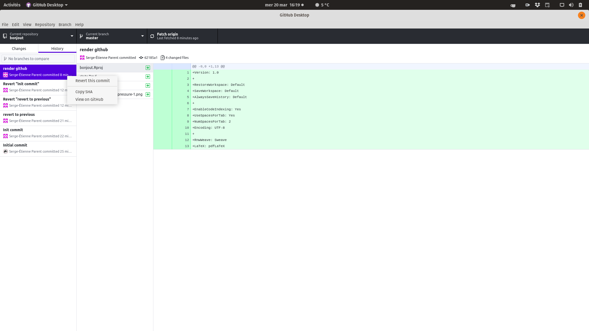
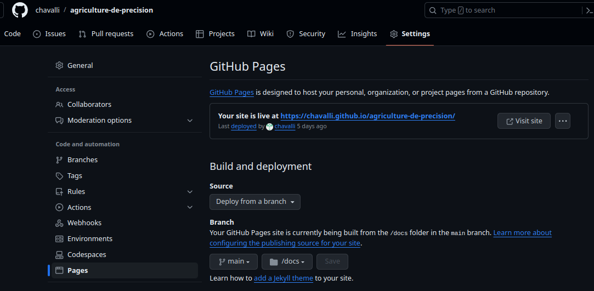

5 Science ouverte et reproductibilité
Objectifs spécifiques :
À la fin de ce chapitre, vous
- saurez exprimer l’importance et les enjeux de la science ouverte
- saurez arranger vos données (format csv) et votre code (format notebook) afin de rendre vos recherches reproductibles
- saurez comment créer un dépôt sur GitHub, puis administrer son développement
La science ouverte favorise la diffusion des connaissances à travers plusieurs aspects.
- Méthodologie ouverte. Ce n’est pas pour rien que les revues scientifiques demandent de la minutie dans la description de la méthodologie: c’est pour s’assurer de bien comprendre la signification des données collectées et faire en sorte que vos données puissent être échantillonnées de la même manière dans une potentielle expérience subséquente. À ce titre, la revue Nature a créé le site de publication de protocoles expérimentaux Protocol exchange, “où la communauté scientifique met en commun son savoir-faire expérimental pour accélérer la recherche” (ma traduction).
- Données ouvertes. En rendant nos données publiques, on permet à la postérité de les utiliser pour améliorer les connaissances, découvrir des structures qui nous avaient échappé, etc. Dans certains cas, l’ouverture des données peut être contrainte par des enjeux légaux (données privées) ou éthiques (données pouvant être utilisées à mauvais escient). Dans la plupart des cas, les avantages surpassent largement les risques encourus par la publication des données, et les informations personnelles peuvent être retirées. Des journaux comme Plos exigent que les données minimales à la reproduction de l’expérience soient fournies en tant que matériel supplémentaire.
- Code source ouvert. Les logiciels open source, comme R, sont gratuits pour la plupart. Cela permet à quiconque de les utiliser, pourvu que l’on possède le support matériel (un ordinateur) et une connection internet. De la même manière, le code R qui vous a permis de générer des résultats à partir de vos données peut être rendu public sous toutes sortes de licenses open source peu restrictive (GPL, BSD, MIT, etc.). Avec les données et le code, vos travaux pourront être reproduits.
- Révision ouverte. La révision est un travail essentiel en science. Traditionnellement, les publications scientifiques sont révisées de manière anonyme, le but étant d’éviter les conflits. Récemment, des revues comme Frontiers ont déployé des modes de révision ouverts, permettant (1) des échanges plus constructifs entre auteurs et réviseurs et (2) de remercier ouvertement la contribution des réviseurs à l’article final.
- Accès ouvert. Les éditeurs scientifiques sont largement critiqués pour demander des frais usuraires aux bibliothèques et pour la consultation à la pièce, ainsi que des frais de publication démesurés. En réaction à cela, le site Sci-Hub débloque gratuitement des millions d’articles scientifiques. Aussi, des journaux sérieux comme Plos et Frontiers publient de facto les articles sur leur site internet, de sorte qu’ils peuvent être librement téléchargés.
Le manque d’ouverture dans la science a mené plusieurs scientifiques à parler d’une crise de la reproductibilité (Baker, 2016). Dans ce chapitre, nous verrons quelques astuces pour que R devienne un outil favorisant la science ouverte. À la fin de ce chapitre, vous devriez être en mesure de déployer votre code sur une archive en ligne, comme ceci.
5.1 Un code reproductible
La British ecological society offre des lignes guide pour créer un flux de travail reproductible (BES, 2017). En outre, les principes suivants doivent être respectés (ma traduction, avec ajouts).
- Commencez votre analyse à partir d’une copie des données brutes. Les données doivent être fournies dans un format ouvert (csv, json, sqlite, etc.). Évitez de démarrer une analyse par un chiffrier électronique ou un logiciel propriétaire (qui n’est pas open source). En ce sens, démarrer avec Excel (
xlsouxlsx) est à éviter, tout comme le sont les données encodées pour SPSS ou SAS. - Toute opération sur les données, que ce soit du nettoyage, des fusions, des transformations, etc. devrait être effectuée avec du code, non pas manuellement. S’il s’agit d’une erreur de frappe dans un tableau, on peut déroger à la règle. Mais s’il s’agit par exemple d’éliminer des outliers, ne supprimez pas des entrées de vos données brutes. De même, n’effectuez pas de transformation de vos données brutes à l’extérieur du code. En somme, vos calculs devraient être en mesure d’être lancés d’un seul coup, sans opérations manuelles intermédiaires.
- Séparez vos opérations en unités logiques thématiques. Par exemple, vous pourriez séparer votre code en parties: (i) charger, fusionner et nettoyer les données, (ii) analyser les données, (iii) créer des fichiers comme des tableaux et des figures.
- Éliminez la duplication du code en créant des fonctions personnalisées. Assurez-vous de commenter vos fonctions en détails, expliquez ce qui est attendu comme entrées et comme sorties, ce qu’elles font et pourquoi.
- Documentez votre code et vos données à même les feuilles de calcul ou dans un fichier de documentation séparé.
- Tout fichier intermédiaire devrait être séparé de vos données brutes.
5.1.1 Structure d’un projet
Un projet de calcul devrait être contenu en un seul dossier. Si vous n’avez que quelques projets, il est assez facile de garder l’info en mémoire. Toutefois, en particulier en milieu d’entreprise, il se pourrait fort bien que vous ayez à mener plusieurs projets de front. Certaines entreprises créent des numéros de projet: vous aurez avantage à nommer vos dossiers avec ces numéros, incluant une brève description. Pour ma part, j’ordonne mes projets chronologiquement par année, avec un descriptif.
📁 2019_abeille-cannebergeNotez que je n’utilise ni espace, ni caractère spécial dans le nom du fichier, pour éviter les erreurs potentielles avec des logiciels capricieux.
À l’intérieur du dossier racine du projet, j’inclus l’information générale: données source (souvent des fichiers Excel), manuscrit (mémoire, thèse, article, etc.) documentation particulière (pour les articles, j’utilise Zotero, un gestionnaire de référence), photos et, évidemment, mon dossier de code (par exemple rstats).
📂 2019_abeille-canneberge
|-📁 documentation
|-📁 manuscrit
|-📁 photos
|-📁 rstats
|-📁 sourceSi vous rédigez votre manuscrit à même votre code (en Latex, Lyx, markdown, R markdown ou Quarto que nous verrons plus loin), vous pouvez très bien l’inclure dans votre fichier de calcul.
À l’intérieur du fichier de calcul, vous aurez votre projet RStudio et vos feuilles de calcul séquencées. J’utilise 01-, et non pas 1- pour éviter que le 10- suive le 1- dans le classement en ordre alpha-numérique au cas où j’aurais plus de 10 feuilles de calcul. J’inclus un fichier README.md (extension md pour markdown), qui contient les informations générales de mes calculs. Les données brutes (csv) sont placées dans un dossier data, mes graphiques sont exportés dans un dossier images, mes tableaux sont exportés dans un dossier tables et mes fonctions externes sont exportées dans un dossier lib.
📂 rstats
|-📁 data
|-📁 images
|-📁 lib
|-📁 tables
📄 bees.Rproj
📄 01_clean-data.R
📄 02_data-mining.R
📄 03_data-analysis.R
📄 04_data-modeling.R
📄 README.mdJe décris les noms de fichiers dans la langue de communication utile pour le rendu final du projet, souvent en anglais lors de publications académiques. J’évite les noms de fichier qui ne sont pas informatifs, par exemple 01.R ou Rplot1.png, ainsi que les majuscules, les caractères spéciaux et les espaces comme dans Deuxième essai.R (le README.md est une exception).
Pour partager un dossier de projet sur R, on n’a qu’à le compresser (zip), puis à l’envoyer. Pour que le code fonctionne sur un autre ordinateur, les liens vers les fichiers de données à importer ou les graphiques exportés doivent être relatifs au fichier R ouvert dans votre projet, non pas le chemin complet sur votre ordinateur.

Tout comme la BSE, l’organisme sans but lucratif rOpenSci offre un guide sur la reproductibilité (le répertoire est maintenant archivé et n’est plus mis à jour depuis 2022, mais vous y avez tout de même accès en lecture seule).
5.1.2 Les formats markdown
Un code reproductible est un code bien décrit. La structure de projet présentée précédemment propose de segmenter le code en plusieurs fichiers R. Cette manière de procéder est optionnelle. Si le fichier de calcul n’est pas trop encombrant, on pourra n’en utiliser qu’un seul, par exemple stats.R. À l’intérieur même des feuilles de calcul R, vous devrez commenter votre code pour en expliquer les étapes, par exemple:
#############
## Titre 1 ##
#############
# Titre 2
## Titre 3
data <- read_csv("data/abeilles.csv") # commentaire particulierRStudio a développé une approche plus conviviale avec son format R markdown. Le langage markdown permet de formater un texte avec un minimum de décorations, et R markdown permet d’intégrer du texte et des codes. Le manuel original de notes de cours était par ailleurs entièrement écrit en R markdown.

Depuis quelques années, Quarto a fait son entrée en scène. Il s’agit de la nouvelle version de R markdown qui se veut plus attrayante, accessible, stable et polyvalente. Quarto a la versatilité d’utiliser, dans un seul document, des morceaux de code provenant de différents langages, puis de produire des fichiers sous différents formats en une seule étape. De plus, vous pouvez l’utiliser directement en RStudio ou dans Jupyter. La version actuelle du manuel est montée à l’aide de Quarto, tout comme les diapositives présentées dans les capsules vidéo du cours.


5.1.2.1 Le langage markdown
Le langage markdown est ce qu’on appelle “un langage de balises léger” qui vous permet d’introduire dans votre texte brut des balises simples pour effectuer le formatage. Un fichier portant l’extension .md ou .markdown est un fichier texte clair (que vous pouvez ouvrir et éditer dans votre éditeur texte préféré), tout comme un fichier .R. RStudio permet notamment d’éditer un fichier .md. Il existe aussi de nombreux éditeurs de texte spécialisés en édition markdown - mon préféré est Typora. Les décorations (ou balises) principales en markdown sont les suivantes (les citations utilisées ci-après sont tirées du roman Dune, de Frank Herbert).
Italique. Pour accentuer en italique, balisez le texte avec des astérisques simples *. Par exemple, “Pourrais-je porter parmi vous le nom de *Paul-Muad'dib*?” devient “Pourrais-je porter parmi vous le nom de Paul-Muad’dib?”
Gras. Pour accentuer en gras, balisez le texte avec des doubles astérisques **. Par exemple, “L'espérance **ternit** l'observation.” devient “L’espérance ternit l’observation”.
Largeur fixe. Pour un texte à largeur fixe (signifiant du code), balisez le texte avec des accents graves. Par exemple, “Quel nom donnez-vous à la petite `souris`, celle qui saute ?” devient “Quel nom donnez-vous à la petite souris, celle qui saute?”
Listes. Pour effectuer une liste numérotée, utilisez le chiffre 1. Par exemple,
1. Paul
1. Leto
1. Aliadevient
- Paul
- Jessica
- Alia
De même, pour une liste à puces, changez le 1. par le - ou le *.
Entêtes. Les titres sont précédés par des #. Un # pour un titre 1, deux ## pour un titre 2, etc. Par exemple,
# Imperium
## Landsraad
### Maison des Atréides
### Maison des Harkonnen
## CHOAM
# Guilde des navigateursInsérera les titres appropriés (que je n’insère pas pour ne pas bousiller la structure de ce texte).
Liens. Pour insérer des liens, le texte est entre crochets directement suivi du lien entre parenthèses. Par exemple, “Longue vie aux [combattants](https://youtu.be/Cv87NJ2xX0k?t=59)” devient “Longue vie aux combattants”.
Équations. Les équations suivent la syntaxe Latex entre deux $$ pour les équations sur une ligne et entre des doubles $$ $$ pour les équations sur un paragraphe. Par exemple, $c = \sqrt{a^2 + b^2}$ devient \(c = \sqrt{a^2 + b^2}\).
Images. Pour insérer une image, .
Une liste exhaustive des balises markdown est disponible sous forme d’aide-mémoire. L’extension de RStudio remedy, installable de la même façon qu’un module, fera apparaître une section REMEDY dans le menu Addins, où vous trouverez toutes sortes d’options de formatage automatique (Figure 5.6). Toutefois, vous verrez plus loin dans la section sur Quarto que d’autres outils encore plus conviviaux existent désormais.

remedy5.1.2.2 R markdown
Dans RStudio, ouvrez un R markdown par File > New file > R Markdown. Si le module rmarkdown n’est pas installé, RStudio vous demandera de l’installer. Une fenêtre apparaîtra.

Les options d’exportation pourront être modifiées par la suite.
Un fichier d’exemple sera créé, et vous pourrez le modifier. Les parties de texte sont écrits en markdown, et le code R est enchâssé entre les balises ```{r} et ```. Je nommerai ces parties de code des cellules ou des blocs de code. Vous pouvez utiliser le raccourci clavier Ctrl + Alt + I pour insérer rapidement un bloc de code.
Des options de code peuvent être utilisées à l’intérieur des accolades {r}. Par exemple
-
{r, filtre-outliers}donne le nomfiltre-outliersau bloc de code, qui permet nommément de nommer les images créées dans le bloc de code. -
{r, eval = FALSE}permet d’activer (TRUE, valeur par défaut) ou de désactiver (FALSE) le calcul de la cellule. -
{r, echo = FALSE}permet de n’afficher que la sortie de la cellule de code en n’affichant pas le code, par exemple un graphique ou le sommaire d’une régression. -
{r, results = FALSE}permet de n’afficher que le code, mais pas la sortie. -
{r, warning = FALSE, message = FALSE, error = FALSE}n’affichera pas les avertissements, les messages automatiques et les messages d’erreur. -
{r, fig.width = 10, fig.height = 5, fig.align = "center"}affichera les graphiques dans les dimensions voulues, alignée au centre ("center"), à gauche ("left") ou à droite ("right").
Notez que vous pouvez exécuter rapidement du code sur une ligne avec la formulation `r `, par exemple la moyenne des nombres `\r a<-round(runif(4, 0, 10)); a` est de `\r mean(a)`, en enlevant les \ devant les r (ajoutées artificiellement pour éviter que le code soit calculé), sera la moyenne des nombres 7, 2, 2, 8 est de 4.75
Une fois que vous serez satisfait de votre document, cliquer sur Knit  et le fichier de sortie sera généré. Le guide qui permet de générer le fichier de sortie est tout en haut du fichier. Nous l’appelons le YAML (acronyme récursif de YAML Ain’t Markup Language). Prenez le YAML suivant.
---
title: "Dune"
author: "Frank Herbert"
date: "1965-08-01"
output: github_document
---Le titre, l’auteur et la date sont spécifiés. Pour indiquer la date courante, on peut simplement la générer avec R en remplaçant "1965-08-01" par 2024-02-29. La spécification output indique le type de document à générer, par exemple html_document pour une page web, pdf_document pour un pdf, ou word_document pour un docx. Dans ce cas-ci, j’indique github_document pour créer un fichier markdown comprenant notamment des liens relatifs vers les images des graphiques générés. Pourquoi un github_document? C’est le sujet de la section 5.2. Mais avant cela, je vous réfère à un autre aide-mémoire.

5.1.3 Quarto markdown
Avant d’utiliser Quarto, il vous faudra l’installer sur votre ordinateur. Lorsque ce sera fait, une fois RStudio redémarré, vous devriez pouvoir créer un document Quarto par File > New file > Quarto Document. Toutefois, je vous recommande plutôt de créer directement un nouveau projet, et de choisir le type de projet s’appliquant à votre situation (typiquement un projet Quarto, mais le manuel de cours par exemple est un livre Quarto).

En créant votre projet dans un nouveau répertoire, vous pouvez choisir le moteur (ici nous utilisons knitr, mais vous pourriez aussi choisir Jupyter si vous préférez) et activer le suivi d’environnement reproductible renv (vous en apprendrez plus sur renv à la section 5.3). De plus, vous pouvez directement créer un répertoire git, ce qui facilitera les étapes d’initialisation de votre répertoire si vous souhaitez en faire un. Pour l’instant, je vous suggère de garder ces cases vides si vous souhaitez seulement utiliser Quarto.

Il existe un guide très détaillé sur l’utilisation de Quarto sur leur site internet. Je vous suggère pour bien démarrer la lecture suivante.
5.1.3.1 Balises des blocs de code
En général, vous pouvez utiliser les mêmes balises dans Quarto qu’avec R markdown. Les mêmes options peuvent être utilisées à l’intérieur des accolades {r} de la même manière (par exemple : {r, important-figure, fig.width = 10, fig.height = 5, fig.align = "center"}), ou alors de façon plus claire avec le style YAML de la façon suivante :
```{r}
#| label: important-figure
#| fig-width: 10
#| fig-height: 5
#| fig-align: center
knitr::include_graphics("images/important-figure.png")
```5.1.3.2 Rendu de documents
Pour créer le rendu de votre document, au lieu d’utiliser le bouton Knit, vous pouvez utiliser Render. Si vos options permettent la sortie de plusieurs formats de fichiers, vous verrez une liste déroulante vous permettant de choisir le format à produire.

Ce bouton est bien pratique lorsque vous avez un seul document simple .qmd dans votre dossier ou alors que vous voulez rapidement visualiser une sortie, mais il est préférable de prendre l’habitude d’utiliser la commande quarto_render pour faire le rendu de tous les fichiers dans le dossier. Certaines options de cette commande vous permettent par exemple de faire le rendu d’un seul format de fichier.
```{r}
install.packages("quarto")
quarto::quarto_render("index.qmd")
```5.1.3.3 Options YAML
Comme pour R markdown, nous utilisons le guide YAML pour spécifier les options de rendements de documents. On peut l’utiliser directement en haut du fichier .qmd en en-tête, mais en général je recommande plutôt d’utiliser le fichier _quarto.yml qui devrait avoir été créé dans votre dossier de projet lors de la création du projet. Vous pouvez y spécifier par exemple le dossier de sortie des fichiers créés, donner des paramètres pour chaque format de fichiers de sortie, etc. Les informations dans ce fichier sont les consignes qui seront suivies lors de l’interprétation et de la création de vos documents. Voici un exemple du contenu d’un fichier YAML inspiré du manuel des notes de cours.
project:
type: book
output-dir: docs
book:
title: "Titre livre"
author:
- name: "Nom auteur 1"
- name: "Nom auteur 2"
date: today
date-format: iso
chapters:
- href: index.qmd
text: Préface
- 01-chap1.qmd
- 02-chap2.qmd
cover-image: images/cover.png
format:
html:
theme: flatly
code-link: true
css: styles.css
toc: true
pdf:
documentclass: scrreprt
toc: true
5.1.3.4 Éditeur visuel
Enfin, un des grands avantages de Quarto en termes d’accessibilité est l’éditeur visuel. Personnellement, je préfère généralement travailler avec l’éditeur de code Source, qui me permet de mieux voir ce qu’il se passe exactement et d’avoir un meilleur contrôle sur le formatage. Toutefois, il m’arrive de passer à l’éditeur visuel lorsque j’ignore comment introduire certains éléments.

En mode d’édition visuelle, il est très facile d’insérer un nouvel élément : il vous suffit de taper / : une liste déroulante devrait alors apparaître. Vous pouvez alors choisir un élément dans la liste, ou d’abord spécifier votre recherche (comme à la Figure 5.13).

Pour finir, il existe des modules vous permettant de créer directement un document à partir de formats de référence. Par exemple, quarto-journals vous permet de créer rapidement des fichiers au format de votre revue préférée. Puisque Quarto est plutôt récent, ces outils sont toujours en développement et peuvent parfois être imparfaits (ou inexistants pour votre revue), mais ils seront plus performants avec le temps et des revues devraient être ajoutées.
5.2 Introduction à GitHub
Le système de suivi de version git (open source) a été créé par Linus Torvalds, aussi connu pour avoir créé Linux. git prend une photo de votre répertoire de projet à chaque fois que vous commettez un changement. Vous pourrez revenir sans problème sur d’anciennes versions si quelque chose tourne mal, et vous pourrez publier le résultat final sur un service d’hébergement utilisant git.
Il existe plusieurs services pour rendre git utilisable en ligne, mais GitHub est définitivement le plus utilisé d’entre tous. La plateforme GitHub est presque devenue un réseau social de développement. GitHub, maintenant la propriété de Microsoft, n’est en soi pas open source. Si comme moi vous avez un penchant pour l’open source, je vous redirige vers la plateforme GitLab, qui fonctionne à peu près de la même manière que GitHub, mais dans sa version gratuite GitLab vous octroie autant de répertoires privés que vous désirez. Seul hic, alors que la plateforme GitHub sera fort probablement toujours vivante dans plusieurs années, on en est moins sûr pour GitLab. C’est pourquoi, en règle générale, j’utilise GitHub à des fins professionnelles mais GitLab à des fins personnelles.
Pour suivre cette partie du cours, je vous invite à créer un compte sur GitHub ou GitLab, à votre choix. Créez un nouveau dépôt (New repository).


Pour utiliser git, vous pourrez toujours travailler en ligne de commande (c’est ce que je préfère personnellement mais je ne le conseille pas nécessairement; vous trouverez toute la documentation nécessaire sur le site de GitHub). Il est aussi possible de travailler avec les outils intégrés dans RStudio, mais je vous suggère d’utiliser GitHub Desktop (qui fonctionne aussi sur GitLab) - évidemment, d’autres logiciels similaires existent. Github Desktop vous permettra d’abord de cloner un répertoire en ligne. Le clonage vous permet de créer une copie locale (sur votre ordinateur) du répertoire.


Une fois que le dépôt est cloné, il est sur votre ordinateur. Lorsque vous effectuez un changement, vous devez commettre (commit), puis envoyer (push) vos changements vers le dépôt en ligne. Pour que votre document markdown soit lisible par GitHub et GitLab, il doit être exporté au format html. Un fichier .md sera créé, et inclura les détails de votre feuille de calculs, images y compris!
De plus, puisque les fichiers HTML générés par Quarto remplacent certains paramètres des fichiers HTML classiques, vous devez ajouter dans le dossier racine de votre projet un fichier vide .nojekyll à partir de votre terminal. Ce fichier indiquera GitHub d’ignorer les procédures Jekyll qu’il lance normalement sur les fichiers HTML (voir site web de Quarto pour plus de détails).
| Mac/Linux | Terminal |
| Windows | Terminal |

L’interface de GitHub Desktop vous permet de revenir en arrière en éliminant des commits précédents.

Vous pourrez ajouter des collaborateurs à votre dépôt, pour que plusieurs personnes travaillent de front sur un même dépôt. Il est aussi possible de créer une branche d’un dépôt, fusionner la branche de développement avec la branche principale, commenter les codes, suggérer des changements, etc., mais cela sort du cadre d’un cours sur la reproductibilité.
Si vous souhaitez créer un site internet comme celui des notes de cours à partir de votre répertoire GitHub, vous devez activer votre page avec GitHub Pages, créer un lien, choisir la branche et le dossier contenant les fichiers HTML et publier.

Enfin, pour renvoyer un article vers votre matériel supplémentaire, insérez le lien dans la section méthodologie. Il peut s’agir du lien complet, ou bien d’un lien raccourci (avec par exemple tinyurl ou bitly). Par exemple,
The data and the R code used to compute the results are both available as supplementary material at https://git.io/fhHEj.
Notez que RStudio offre une interface pour utiliser git via un onglet afiché en haut à droite dans l’affichage par défaut. Ne l’ayant jamais utilisé, je ne me sens pas à l’aise d’en suggérer l’utilisation, mais libre à vous d’explorer cet outil et de vous l’approprier!

5.3 Introduction à renv
Alors que les modules sont continuellement mis à jour, on doit s’assurer que l’on sache exactement quelle version a été utilisée si l’on désire être strict sur la reproductibilité. Lorsque je révise un article, je demande à ce que le nom des modules utilisés et leur numéro de version soient explicitement cités et référencés. Par exemple, dans un article sur l’analyse de compositions foliaires de laitues inoculées par une bactérie, j’écrivais:
Computations were performed in the R statistical language version 3.4.1 (R Development Core Team, 2017). The main packages used in the data analysis workflow were the vegan package version 2.4-3 (Oksanen et al., 2017) for ordination, the compositions package version 1.40-1 (van den Boogaart and Tolosana-Delgado, 2013) for ilr transformations, the nlme version 3.1-131 (Pinheiro et al., 2017) package to compute the random experimental effect, the mvoutlier package version 2.0.8 (Filzmoser and Gschwandtner, 2017) for multivariate outlier detection, and the ggplot2 package version 2.2.1 (Wickham and Chang, 2017) for data visualization. The data and computations are publicly available at https://github.com/essicolo/Nicolas-et-al_Infected-lettuce-ionomics. Nicolas et al., 2019
De cette manière, une personne (que ce soit vos collègues, quiconque voudra auditer ou évaluer votre code ou vous-même dans le futur) pourra reproduire le code publié sur GitHub en installant les versions de R et des modules cités. Mais cela est fastidieux. C’est pourquoi l’équipe de RStudio (oui, encore ceux-là) ont développé le module renv, qui permet d’installer les modules à même votre dossier de projet (le dossier contenant le fichier .Rproj).
Pour l’utiliser à tout moment en cours de projet, il suffit de lancer la commande renv::init(). Cette commande configure l’infrastructure du projet, installe les libraries utilisées dans le dossier renv à l’intérieur du dossier de projet et bloque leurs versions actuelles dans le fichier renv.lock, crée un fichier .Rprofile qui traquera les installations futures de librairies supplémentaires, puis redémarre la session R. Ouf!

Dans le dossier renv, le .gitignore contient tous les documents et les types de documents qui sont ignorés par git. L’option par défaut est d’ignorer le dossier library, qui contient les modules installés, mais de garder les fichiers activate.R et settings.json, qui contiennent le script d’installation des modules non installés (qui devront être installés par les autres personnes utilisant votre projet) ainsi que les paramètres du projet. Mieux vaut garder les options par défaut. Initialiser renv revient à scanner vos documents de projet pour trouver les modules utilisés et créer un paquet contenant tout cela à même votre projet, dans un dossier renv.
📂 rstats
|-📁 data
|-📁 docs
|-📁 images
|-📁 lib
|-📁 renv
|-📁 tables
📄 _quarto.yml
📄 sentier-d-or.Rproj
📄 stats.qmd
📄 README.md
📄 renv.lock
📄 .Rprofile
📄 .gitignoreCe dossier contiendra tout ce qu’il faut pour utiliser les modules du projet d’une personne que l’on nommera Leto. Lorsqu’une autre personne, appellons-la Ghanima, utilisera le projet de Leto, RStudio vérifiera si le module renv est bien installé, et l’installera s’il ne l’est pas. Pour utiliser les modules du projet et non pas les modules de son ordinateur, Ghanima lancera la fonction renv::restore(), qui installera les versions décrites dans le lockfile (renv.lock). Si Leto décide de mettre à jour ses modules en cours de projet, il lancera la fonction renv::install() pour installer de nouveaux modules, renv::update() pour faire la mise à jour de tous les modules utilisés, puis renv::snapshot() pour que ces nouveaux modules soit intégrés à son projet dans le lockfile. Lorsque Leto commettra (commit) ses changements dans git et les publiera (push) sur GitHub, puis lorsque Ghanima mettra à jour (fetch) son dépôt local git lié au dépôt GitHub, elle devra à nouveau lancer renv::restore() pour que les modules soient bel et bien ceux utilisés par Leto.
Notez qu’avec renv, vous n’installez pas réellement les modules complets à chaque fois : renv garde en mémoire cache l’installation des modules sur votre ordinateur, si bien que lorsque vous installez plusieurs la même version d’un même module, vous ne compilez pas à chaque fois et vous n’utilisez pas plus d’espace sur votre disque dur qu’il n’en faut.
5.4 Pour terminer, le reprex
Lorsque j’ai découvert un bogue dans le module weathercan, j’ai ouvert une issue sur GitHub en indiquant le message d’erreur obtenu, en espérant que l’origine du bogue puisse être facilement déduit. Un développeur de weathercan m’a demandé un reprex. J’ai été déçu lorsque j’ai compris que le reprex n’était pas une espèce de dinosaure, mais plutôt un exemple reproductible (reproducible example).
📗 Reprex: Un exemple reproductible.

J’ai essayé d’isoler le problème pour reproduire l’erreur avec le minimum de code possible. À partir d’un code de plus de 7000 lignes (les présentes notes de cours), j’en suis arrivé à ceci:
stations <- data.frame(A = 1)
library("weathercan")
mont_bellevue <- weather_dl(
station_ids = c(5397, 48371),
start = "2019-02-01",
end = "2019-02-07",
interval = "hour",
verbose = TRUE
), qui me retournait l’erreur
Getting station: 5397
Formatting station data: 5397
Error in strptime(xx, f, tz = tz) : valeur 'tz' incorrecteLe bogue: la fonction weather_dl() utilisait à l’interne un objet nommé stations, qui entrait en conflit avec un objet stations s’il était défini hors de la fonction.
Synthétiser une question n’est pas facile (créer cet exemple reprductible m’a pris près de 2 heures). Mais répondre à une question non synthétisée, c’est encore plus difficile. C’est pourquoi on (moi y compris) vous demandera systématiquement un reprex lorsque vous poserez une question liée à une erreur systématique, le plus souvent en programmation.
Un exemple reproductible permet à quelqu’un de recréer l’erreur que vous avez obtenue simplement en copiant-collant votre code. - Hadley Wickham
Selon Hadley Wickham (gourou de R), un reprex devrait comprendre quatre éléments (je joue à l’hérétique en me permettant d’adapter le document du gourou):
- Les modules devraient être chargés en début de code.
- Puis vous chargez des données, qui peuvent être des données d’exemple ou des données incluses à même le code R (comme des données générées au hasard).
- Assurez-vous que votre code est un exemple minimal (retirer le superflu) et qu’il soit facilement lisible.
- Incluez la sortie de la fonction
sessionInfo(), qui indique la plateforme matérielle et logicielle sur laquelle vous avez généré l’erreur. Ceci est important en particulier s’il s’agit d’un bogue.
Lorsque vous pensez avoir généré votre reprex, redémarrez R (Session > Restart R dans RStudio), puis lancez votre code pour vous assurer que l’erreur puisse être générée dans un nouvel environnement tout propre.
La librarie reprex de tidyverse vous aide à générer et à tester des exemples reproductibles en vous fournissant un bloc de code au format markdown que vous pouvez directement copier-coller sur GitHub, StackOverflow ou Discourse (les lieux fréquents où vous poserez vos questions).